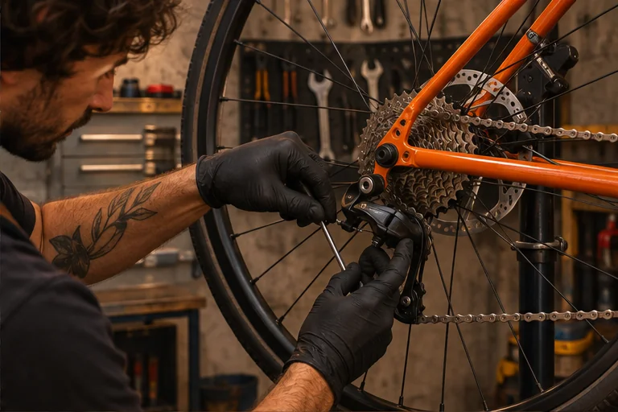

O que vai para a bancada?
Escolha os serviços que quer discutir com a oficina. A lista acompanha sua seleção na hora.
Escolher serviços
Escolha os serviços que quer discutir com a oficina. A lista acompanha sua seleção na hora.
Escolher serviços